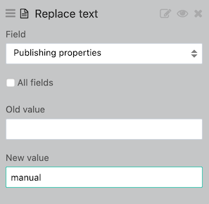

Domain dataset overview

This custom view will help you create an overview of all the datasets on your domain. See the user guide to set up this special dataset.
For this view to properly function, you need to activate these options on the extractor:
- Statistics
- Private datasets
- Staged datasets
You need to set up the following fields as facets:
- Dataset ID
- Themes (multivalued by
;) - License
- Publisher
- Visibility
- Publishing Properties
You also need to set up a Replace text processor with the field Publishing Properties and new value set to “manual”:

See this resource live here. (Note: we made this page public for the sake of example, but it is most likely a private view).
Dataset in use: domaindatasets (See it on userclub domain)
Fields in use:
| visibility | publishing_properties | theme | publisher | dataset_id | explore_popularity_score |
|---|---|---|---|---|---|
| restricted | manual | airbnb-listings | 0.3 | ||
| domain | federated | Academy | Commission européenne | rapex-rapid-alert-system-for-dangerous-non-food-products | 0.4 |
| restricted | scheduled | Usages | CSM OpenDataSoft | interesting-use-cases | 0.6 |
| domain | federated | Academy | ODS Data Team | times-person-of-the-year-1927-present | 1.5 |
<div class="container-fluid">
<section class="top-links">
<strong>
In your backoffice
<i class="fa fa-external-link" aria-hidden="true"></i>
</strong>
<a href="/backoffice/monitoring/users/">Users</a>
<a href="/backoffice/monitoring/quality/">Quality</a>
<a href="/backoffice/monitoring/actions/">Actions</a>
<a href="/backoffice/monitoring/activity_log/">Activity logs</a>
</section>
<section class="m-4">
<h1 class="title">
Catalog overview
<span class="title-info">
(last updated {{ ctx.dataset.metas.data_processed | date:"longDate" }})
</span>
</h1>
<div
class="row"
ods-analysis="datasets"
ods-analysis-x="visibility"
ods-analysis-serie-total="COUNT(*)"
ods-analysis-context="ctx"
>
{{ datasetcount = (datasets.results | toObject : 'x') ; "" }}
<div class="col-md-4 m-4">
<a
class="box"
href="/explore/dataset/domaindatasets/table/?refine.visibility=restricted"
target="_blank"
>
<div></div>
<span class="kpi">
<i class="fa fa-lock" aria-hidden="true"></i>
{{ datasetcount['restricted'].total || 0 }}
</span>
<p class="subtitle">Private datasets</p>
</a>
</div>
<div class="col-md-4 m-4">
<a
class="box"
href="/explore/dataset/domaindatasets/table/?refine.visibility=domain"
target="_blank"
>
<div></div>
<span class="kpi">
<i class="fa fa-unlock-alt" aria-hidden="true"></i>
{{ datasetcount['domain'].total || 0 }}
</span>
<p class="subtitle">Public datasets</p>
</a>
</div>
<div class="col-md-4 m-4">
<a
class="box"
href="/explore/dataset/domaindatasets/table/?q=publishing_properties:'federated'+or+publishing_properties:'scheduled'&sort=modified"
target="_blank"
>
{{ ctx.parameters['sort'] = 'modified' ; "" }}
<ods-chart display-legend="false" align-month="true">
<ods-chart-query
context="ctx"
field-x="publishing_properties"
maxpoints="0"
timescale="day"
stacked="normal"
category-colors="{ 'scheduled': 'var(--success)', 'federated': 'var(--info)' , 'manual': 'var(--warning)'}"
>
<ods-chart-serie
expression-y="jddscheduled"
chart-type="pie"
labelsposition="inside"
innersize="15%"
function-y="COUNT"
label-y="total"
scientific-display="true"
>
</ods-chart-serie>
</ods-chart-query>
</ods-chart>
<p class="subtitle">Update methods</p>
</a>
</div>
</div>
</section>
<section class="m-4">
<div
ods-results="datasetlist"
ods-results-context="ctx"
ods-results-max="5"
>
<h2 class="title">
Last modified
</h2>
<div class="pill-list">
<a
ng-href="{{ '/explore/dataset/' + item.fields.dataset_id + '/table' }}"
class="pill"
ng-repeat="item in datasetlist"
>
{{ item.fields.title}}
</a>
</div>
</div>
</section>
<!-- Ligne avec les graphiques de répartition-->
<section class="m-4">
<div class="row">
<div class="col-md-6">
<div>
<h2 class="title">
Dataset by topic
</h2>
<ods-chart align-month="true" labels-x-length="20">
<ods-chart-query
context="ctx"
field-x="theme"
maxpoints="0"
sort="serie1-1"
>
<ods-chart-serie
expression-y="records_count"
chart-type="treemap"
function-y="COUNT"
label-y="total"
color="range-Paired"
scientific-display="true"
>
</ods-chart-serie>
</ods-chart-query>
</ods-chart>
</div>
</div>
<div class="col-md-6">
<h2 class="title">
Dataset by publisher
</h2>
<ods-chart align-month="true" labels-x-length="20">
<ods-chart-query
context="ctx"
field-x="publisher"
maxpoints="0"
sort="serie1-1"
>
<ods-chart-serie
expression-y="records_count"
chart-type="treemap"
function-y="COUNT"
label-y="total"
color="range-Paired"
scientific-display="true"
>
</ods-chart-serie>
</ods-chart-query>
</ods-chart>
</div>
</div>
</section>
<!-- Top et flop 5 des jeux de données les + populaires -->
<section class="m-4">
<div class="row">
<div class="col-md-6">
<h2 class="title">
Most popular datasets
</h2>
<div
ods-analysis="datasetminpopularity"
ods-analysis-context="ctx"
ods-analysis-max="8"
ods-analysis-x="dataset_id"
ods-analysis-serie-popularity="AVG(explore_popularity_score)"
ods-analysis-sort="popularity"
>
<table class="top3-table">
<thead>
<tr>
<th>#</th>
<th>Dataset</th>
<th>
Score
<i
class="fa fa-info-circle"
aria-hidden="true"
ods-tooltip="<p>The popularity score is the result of a calculation that uses the number of downloads, reuses and API calls of a dataset. The higher the score is, the more the dataset is being used!</p> "
></i>
</th>
<th>Details</th>
</tr>
</thead>
<tbody>
<tr
ng-repeat="(position,analyse) in datasetminpopularity.results"
>
<td>{{ position + 1}}</td>
<td>
<a
target="_blank"
ng-href="{{ '/explore/dataset/' + analyse.x}}"
>
{{ analyse.x }}
</a>
</td>
<td>{{ analyse.popularity | number }}</td>
<td>
<a
target="_blank"
ng-href="{{ '/explore/dataset/ods-api-monitoring/analyze/?source=monitoring&q=' + analyse.x }}"
><i class="fa fa-bar-chart" aria-hidden="true"></i>
</a>
</td>
</tr>
</tbody>
</table>
</div>
</div>
<div class="col-md-6">
<h2 class="title">
Least popular dataset
</h2>
<div
ods-analysis="datasetmaxpopularity"
ods-analysis-context="ctx"
ods-analysis-max="8"
ods-analysis-x="dataset_id"
ods-analysis-serie-popularity="AVG(explore_popularity_score)"
ods-analysis-sort="-popularity"
>
<table class="top3-table">
<thead>
<tr>
<th>#</th>
<th>dataset</th>
<th>
Score
<i
class="fa fa-info-circle"
aria-hidden="true"
ods-tooltip="<p>The popularity score is the result of a calculation that uses the number of downloads, reuses and API calls of a dataset. The higher the score is, the more the dataset is being used!</p> "
></i>
</th>
<th>Details</th>
</tr>
</thead>
<tbody>
<tr
ng-repeat="(position,analyse) in datasetmaxpopularity.results"
>
<td>{{ position + 1}}</td>
<td>
<a
target="_blank"
ng-href="{{ '/explore/dataset/' + analyse.x}}"
>{{ analyse.x }}</a
>
</td>
<td>{{ analyse.popularity | number }}</td>
<td>
<a
target="_blank"
ng-href="{{ '/explore/dataset/ods-api-monitoring/analyze/?source=monitoring&q=' + analyse.x }}"
><i class="fa fa-bar-chart" aria-hidden="true"></i>
</a>
</td>
</tr>
</tbody>
</table>
</div>
</div>
</div>
</section>
<section class="m-4">
<div class="row">
<div class="col-md-12">
<h2 class="title">
Licenses use
</h2>
<ods-tag-cloud
context="ctx"
facet-name="license"
max="10"
redirect-to="/explore/dataset/domaindatasets/table/"
>
</ods-tag-cloud>
</div>
</div>
</section>
</div>
:root {
--identity: #142e7b;
--identity-light: #F2F3F8;
--success: #00C7B1;
--info: #0086D6;
--warning: #EFB71B;
--light-300: #DEE5EF;
--light-500: #898D92;
--light-600: #565656;
}
/* Default CSS override */
@media screen and (min-width: 968px) {
.row > *:first-child {
margin-left: 0;
}
.row > *:last-child {
margin-right: 0;
}
.row {
display: flex;
}
}
.odswidget-charts {
margin: 0 -12px;
}
.ods-chart {
min-height: inherit;
}
.odswidget-tag-cloud {
font-size: 0.8rem;
color: var(--light-600);
}
/* Elements */
.title {
font-weight: 300;
margin-bottom: 1em;
}
h1.title {
font-size: 24px;
}
h2.title {
font-size: 20px;
}
.subtitle {
font-size: 1rem;
color: var(--light-500);
}
.title-info {
font-size: 1rem;
}
.kpi {
font-size: 42px;
}
.kpi i {
color: var(--light-500);
}
.pill {
border: 1px solid var(--light-300);
border-radius: 999px;
padding: 0.5rem 1.5rem;
text-decoration: none;
margin-right: 8px;
margin-bottom: 8px;
}
.pill:hover {
border: 1px solid var(--light-600);
text-decoration: none;
}
/* Components */
.top-links {
font-size: 1rem;
}
.top-links > *:not(:last-child) {
margin-right: 8px;
}
.box {
height: 100%;
min-width: 220px;
display: flex;
flex-direction: column;
align-items: center;
justify-content: space-between;
padding: 16px;
border-radius: 4px;
border: 1px solid var(--light-300);
}
.box .odswidget-charts {
width: 250px;
height: 250px;
margin: 0;
}
.pill-list {
display: flex;
flex-wrap: wrap;
}
a.box:hover {
text-decoration: none;
}
.box:hover {
border: 1px solid var(--light-600);
}
.top3-table {
width: 100%;
}
.top3-table th {
background-color: var(--identity-light);
padding: 8px;
color: var(--identity);
font-weight: 300;
white-space: nowrap;
}
.top3-table td a {
font-weight: 300;
}
.top3-table td {
padding: 8px;
}
.top3-table tr {
border-top: 1px solid #dee5ef;
}
.top3-table tbody tr:nth-child(-n + 3) * {
font-weight: 500;
}
/* Utilities */
.m-4 {
margin: 24px;
}